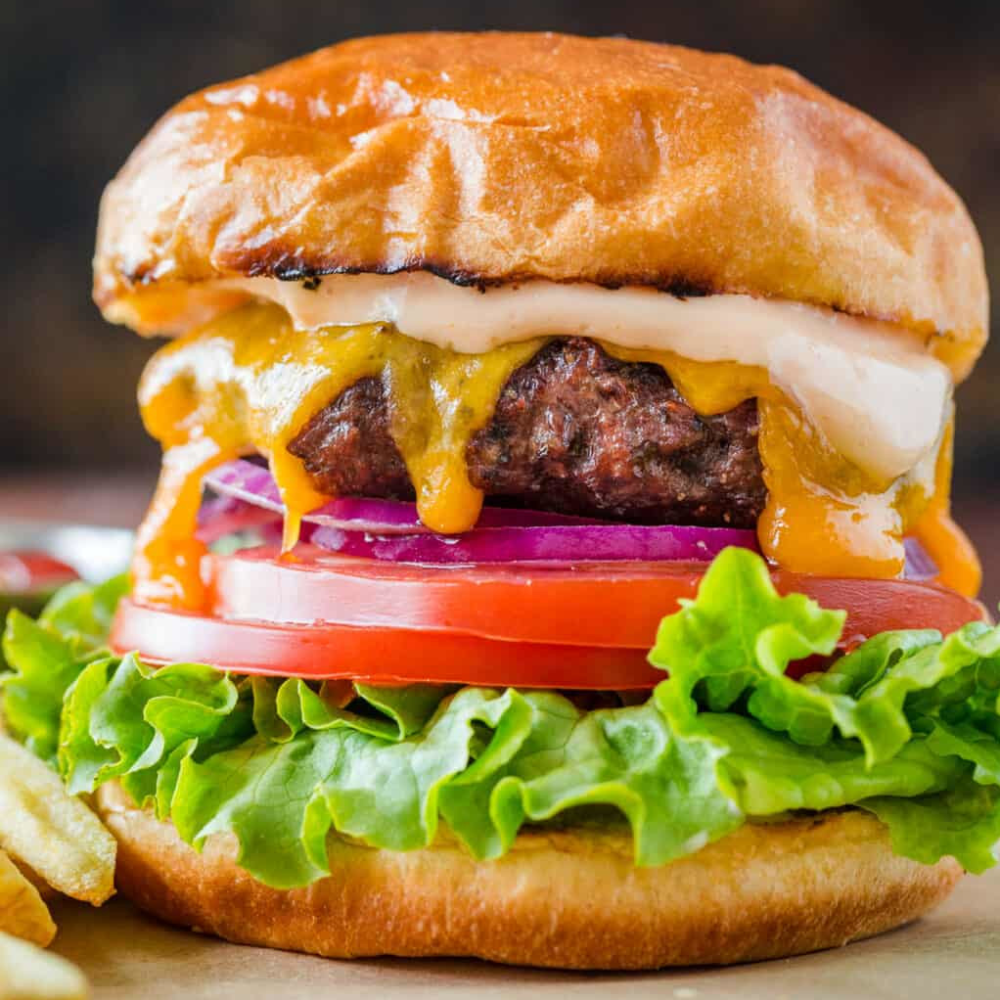

Hamburger

Description
The Best Burger Recipe! Sharing our secrets for making restaurant-quality hamburgers, from the juiciest burger
patties to the best buns and burger sauces.
Ingredients
- 500 g ground chuck beef
- fine sea salt, to taste
- freshly ground black pepper, to taste
- 4 burger buns
- 4 medium cheddar cheese, (thick sliced)
- 1 large tomato, sliced into 8 rings
- 0.5 bunch green leaf lettuce
- 0.5 medium red onion, thinly sliced into rings
- 71.5 g dill pickle slices
Steps
- Slice, and prepare all of your burger toppings and sauces.
- Spread the cut-side of the bun with suftened or melted butter and toast the bun ahead or in the last couple of
minutes iwht the burgers on the grill. Toasting the bun adds great flavor and prevents a soggy bun.
- Preheat grill to medium heat. Divide ground beef into 4 porttions and form patties that are about 1/2 inch thick
nd 1 inch wider than the burger buns. Season patties generously with salt and pepper.
- Grill Hamburger patties covered for 3-5 minutes each side on the grill. Flip burgers when juices are
accumulating on top of the burger and you have a good sear. Apply cheese in the last 1-2 minutes of grilling then
cover with the lid and cook until the internal temperature of beef reaches 160°F.